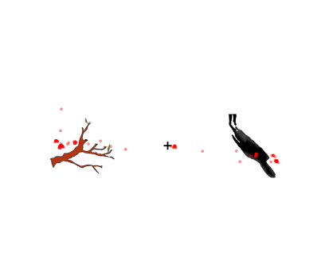
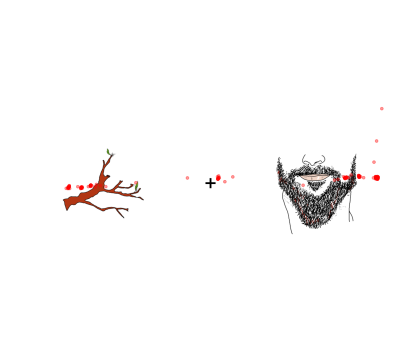
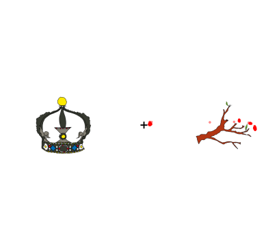

Vocabulary Acquisition
With colleagues at the University of Leipzig, I use eye‑tracking to study how people learn new words in a second language.
We test practical factors such as how often words are repeated and how many different speakers a learner hears. The aim is to find learning conditions that make recognition faster, more accurate, and more durable.
The study uses visual recognition tasks after learning. By measuring where and when the eyes move to the correct image, we can infer how quickly the word is identified and how confident that decision is.
Progression of learning
These three images show how a participant learned the word anaf (“branch”). Each dot marks where the person looked. In the first trial, attention is split between both pictures. By the fifth trial, the person looks almost only at the correct picture, suggesting they have learned which image matches the word.

First presentation

Second presentation
